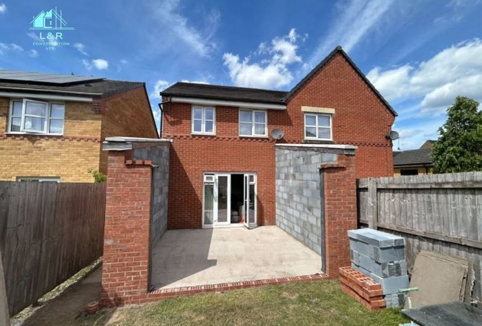

01
HOUSE EXTENSION BUILDERS
House Extensions
From smaller home improvements to larger extensions, L&R Design & Build builds single-storey and double-storey house extensions tailored to the property and the requirements of the project.
Single-storey extensions
Double-storey extensions
Small to large projects
Brickwork
Discuss an Extension